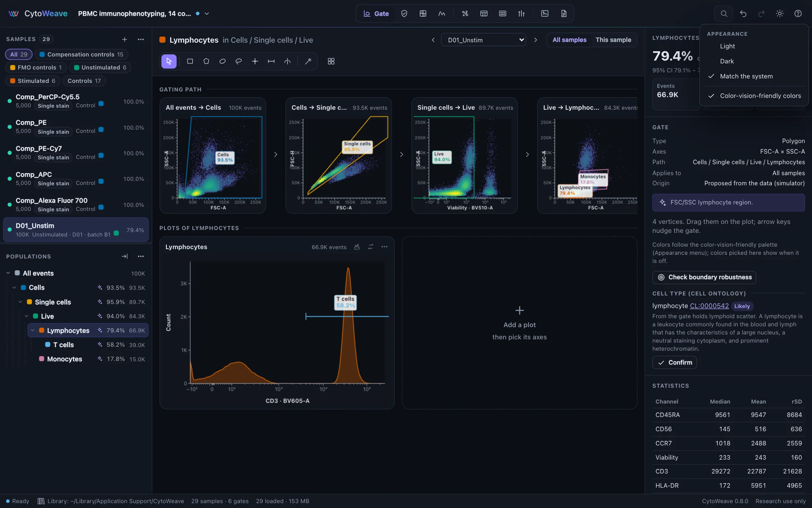
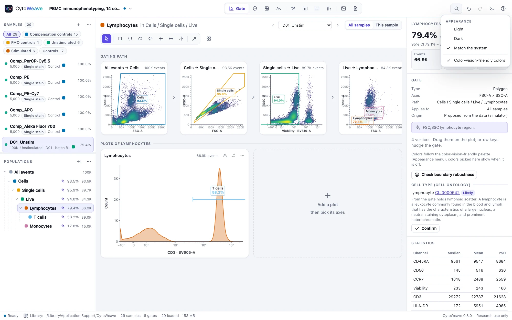

Accessibility
Colors that stay distinguishable with color blindness, keyboard operation, and plots described in words.
Color-vision-friendly colors


About one man in twelve and one woman in two hundred see colors differently. The default palette was chosen to look good and to be distinct with typical vision; for someone with deuteranopia, its orange and gold populations look the same. Turn on Color-vision-friendly colors in the Appearance menu (the sun or moon button at the top right, or search for it with ⌘K or Ctrl+K):
- Populations, groups and clusters take a palette that stays distinct with protanopia, deuteranopia and tritanopia: Okabe and Ito's colors first, then colors chosen one by one to be as far as possible from the others in every kind of vision. Populations are colored in the order of the gating tree, whatever colors they were given; their own colors come back when the setting is off, and the workspace is not changed.
- Heat maps drawn with the rainbow maps (Classic, Turbo) are drawn with viridis, which gets lighter steadily from low to high in every kind of vision. The plot's color-map menu says so.
- Status colors (passed, warning, failed) become blue, orange and magenta instead of green, amber and red.
The setting is kept for this computer. Figures and plots exported while it is on use its colors.
How far apart the colors look, as the smallest color difference (CIEDE2000) between any two of the first eight colors, with each vision simulated as Machado et al. (2009) describe:
| Palette | Typical | Protanopia | Deuteranopia | Tritanopia |
|---|---|---|---|---|
| Default | 16.4 | 1.2 | 0.8 | 4.4 |
| Color-vision-friendly | 19.2 | 12.3 | 12.5 | 11.1 |
Below about 2 two colors look the same; above 10 they are clearly different. Across all twenty colors of the friendly palette the smallest difference is 7.2.
Whatever the setting, nothing is shown by color alone: status badges carry words or numbers ("QC 79", "same", "out of control"), and status dots have a text equivalent for screen readers and on hover.
Keyboard
Every view and action can be reached without a mouse:
- ⌘K (Ctrl+K) searches commands, views, samples and populations; ⌘1…⌘9 go to a view; ? lists the shortcuts.
- Tab moves between controls, and a focus ring shows where you are (it appears only when you use the keyboard).
- In the sample list, ↑ and ↓ move between samples.
- In the population tree, ↑ and ↓ move between populations, → opens a branch or goes to its first child, ← closes it or goes to the parent, and Home and End go to the ends. F2 renames, Delete deletes.
- The selected gate moves with the arrow keys (⇧ for larger steps), and the limits of ranges and rectangles can be typed in the inspector.
- Dialogs keep the focus inside until they close, close with Esc, confirm with ⌘↵, and give the focus back to where it was.
- Tables and other scrolling regions can be focused and scrolled with the arrow keys.
Screen readers
- Each plot has a text description: its type, axes, population and event count, and the gates drawn on it with their frequencies ("Pseudocolor plot FSC-A against SSC-A: Live, 84.3K events. Gates: Lymphocytes 79.4%; Monocytes 17.8%").
- The population tree is announced as a tree, each population with its frequency and count.
- Tables of statistics, comparisons and QC results are ordinary tables.
- Buttons that show only an icon have names, and menus and selects have labels.
How it is checked
- The axe-core rules for WCAG 2.1 levels A and AA run in every documentation scene, in both themes (
node docs/capture/capture.mjs --audit). - The validation suite's
accessibilitychecks compute the contrast of every text color on every surface it is used on, in both themes with the setting off and on (at least 4.5:1 everywhere), and the distances between the palettes' colors in every kind of vision.
What is not covered yet
- Drawing a new gate needs a pointer (or an AI agent, which creates gates from coordinates). From the keyboard you can select, move, rename and delete gates and type their limits.
- A plot's events cannot be explored point by point without a pointer; its description and the statistics table give the numbers.
- Testing with screen readers by people who use them every day has not been done. The walkthrough below is the test we would like reports from.
A screen-reader walkthrough
With VoiceOver (macOS) or NVDA (Windows), from a fresh window:
- Open the start page and choose the PBMC immunophenotyping example. The samples load and the Gate view opens.
- Choose Add suggested gates (offered with the examples). Move to the population tree and go down to Lymphocytes: the frequency and count are read.
- Move to the plots: each is read as a description with its gates.
- Move to the sample list and step to D01_Stim: the plots and the tree follow.
- Open QC with ⌘K, run QC, and find the sample with a clog in the results.
- Open Compare, choose T cells, and read the result table.
- Open the Appearance menu and turn on color-vision-friendly colors, then off again.
Please report anything that is not read, is read wrongly, or cannot be reached, on GitHub.